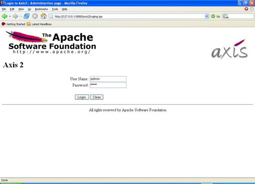

Version 0.94
Feedback: axis-dev@ws.apache.orgAxis2 Web Administration Module provides a way to configure Axis2 dynamically. It's important to note that this dynamic configuration will NOT be persistent, i.e. if the servlet container is restarted then all the dynamic configuration changes will be lost.
From Axis2 Web Application Home page you can go to Administration page by following 'Administration' link, then login page shown below will appear requesting user name and a password. The default user name is 'admin' (without quotes) and default password is 'axis2' (without quotes).

You can change the user name & password values by changing following two parameters in axis2.xml as required.
If the login is successful you will see the screen below. This is where you can view the configuration and the state of the running system and dynamically configure it.


You can upload packaged Axis2 service archive files using this page. This can be done in two simple steps:

The functionality of the 'Available Services' option is almost same as the functionality of Axis2 Web Application Home page 'Services' option where it displays the list of deployed services. But as an additional feature, if there are any modules engaged globally to services or operations those details will also be displayed here.

Service group is a logical collection of set of services and 'Available Service Groups' link will list all the available service groups in the system .

To view the available modules in the 'modules' directory of the 'repository' click 'Available Modules' link. This will show you all the available modules in the system. Those modules can be engaged dynamically.

From the 'Globally Engaged Modules' link you can view globally engaged modules, if any. If a module was engaged globally then the handlers that belong to that module will be executed irrespective of the service.
'Available Phases' link will display all the avaliable phases. In Axis2 there are two levels of phases:
The main difference between these two levels is that system predefined phases will be invoked irrespective of the services, while user defined phases will be invoked when the dispatcher finds the operation. Note that it is essential for module developers and service writers to have a good understanding of phases and phase ordering.

'Global Chains' link will display all the Global Execution Chains. The most interesting feature of Axis2 Web Administration Module is that it provides a very basic way of viewing the global phase list and handlers inside the phases depending on both phase and handler orders. This kind of information is extremely useful in debugging the system, as there is no other way to list out handlers in the global chains. If you engage a new module, the new handlers will be added to the global chains and displayed on this page.

The 'Operation Specific Chains' link can be used to view the handlers corresponding to a given service in the same order as it is in the real execution chain.

'Engaging Modules' link allows to engage modules either globally (to all services), to a service group, to a service or to an operation depending on the module implementation. If the module was designed to engage the handlers globally then handlers in the module can be included in any phase in the system. It can be either system predefined or user defined phase.
On the other hand, if the module was implemented in such a way that it is going to be deployed to a service or to an operation, then the module canNOT be included in any of the System Predefined Phases. Thus it can only be included in User Defined Phases.
Immediately after engaging the module you can see the status of engagement indicating whether it is engaged properly or not.

This functionality provide a way to remove unnecessary services from the running system, but the removal is transient which means if you restart the system the service will be available.

This functionality provide a way to change parameters in a service or its operations.These changes will be transient too, which means if you restart the system changes will not be reflected.

By listing current context hierarchy 'View Hierarchy' link provides a means to look at the run time system. This will list out all the available service group contexts , service contexts , operation context and etc.